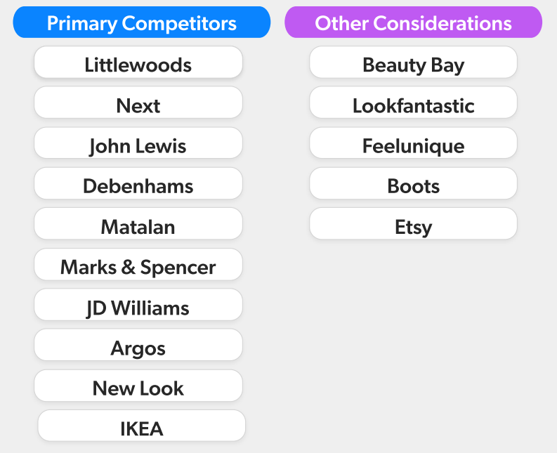

The taxonomy across all the brands at FGH is being improved and thus means the attributions for products have been improved. A product owner suggested that the customer's attention should be brought to using the filters on the Product List Pages as the new attributions have allowed for clearer and more specific filtering options. I was tasked with exploring how users could be notified of the new filtering options.
Adobe XD • CSS
I outlined the problem statement/outcome and carried out competitor analysis.
The taxonomy has been updated which has introduced new categories/sub-categories which can be used to filter products on the PLP. Customers may not be aware of this and will not be aware of the new functionality within the filtering.
A UI element will be used to indicate that there are new filtering capabilities on the PLP which will encourage customers to use the filters and improve their shopping experience by helping them browse more specifically.
I began by looking at the styling and functionality of the filters on other retailer sites and if/how they drew attention to them. I looked at the main competitors for Freemans but also some beauty retailers as the solution would be tested on the Beauty categories.
When carrying out the analysis of each competitor, I outlined some questions:
I summarised my findings into three points that I presented to the product owner for initial feedback on direction.
The FGH filter button is already fairly prominent, especially with the sticky positioning at the top, so customers are often aware of the feature. If additional attention to the filtering is desired, positioning and interactions in relation to the filter menu and the page scrolling, will need to be explored.
Also consider a different approach that many competitors, like Next, implement - highlighting categories using chips as another way to filter. It will make it quicker and easier to use, as well as allowing us to place prominence on specific categories.
After presenting the initial research ideas to the product owner, it was decided that they still wanted to continue with a tooltip. I explored several variations on how a notification could appear on the page.
I began with some lo-fi wireframe sketches to establish a few ideas.
It was important that the notification covered a minimal amount of the products as to not hide any of the information from the customer and cause frustration. The idea of pushing the product cards further down so the notification was not overlaid was considered, however this would have caused layout shift and could cause confusion if the page loaded slowly.
It was also important that the notification would appear for long enough that the user would actually notice it. Therefore it was important to allow the user to dismiss the notification when desired.
The copy needed to be friendly but informative. I came up with a few different ideas and also considered the length of copy and space available for it.
I then created some mock-ups of variations of the tooltip.
I considered different ways that the user could dismiss the notification:
I also focused on how it would stand out to the customer through styling and also whether it could be tied in with the Freemans branding.
A final design was created and prototyped before presenting to the product owner who then passed it onto the engineer for implementing.
The design was implemented as an A/B test on one of the other brand websites. I worked with one of the engineers to ensure the design was styled as intended and provided support with CSS on some smaller devices.
The logic of the notification interaction had to be considered. The notification would appear on page load and the general rules were:
This was the first task I undertook when beginning my UX role. Whilst it was a small task, I learned a lot about UX processes and design thinking.
I learned there was a difference between solution design and actually designing to solve a problem. As this task originated from functionality seen on a competitor site, it was easy to immediately assume the same functionality would be the solution.
It was important to follow the double diamond process of starting with the problem, expanding to multiple solutions and then refining a final design to be delivered.